SO
';" />Cantera vasca de élite
Real Sociedad
1909
Año de fundación del club
La Real / Txuri-urdin
Una breve historia
Fundada en 1909, la Real Sociedad vivió su mejor época a inicios de los 80 con dos Ligas consecutivas. Históricamente ligada a la cantera vasca (igual que el Athletic durante años), ha sido semillero de grandes futbolistas como Xabi Alonso o Griezmann.
Fieles a los colores
de San Sebastián
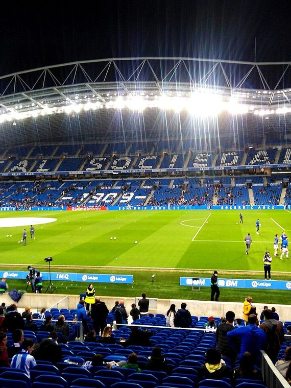
📷Foto pendiente
(real-sociedad-1.jpg)';" />
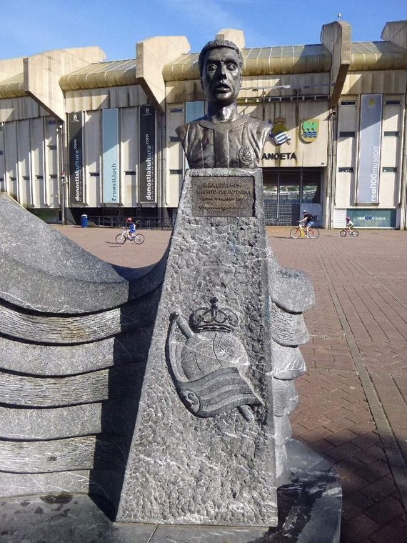
📷Foto pendiente
(real-sociedad-2.jpg)';" />
Títulos y logros
Vitrina de títulos
0
LaLiga
0
Copa del Rey
La rivalidad
El duelo que enciende a la afición
Real Sociedad
VS
Athletic Club — El Derbi Vasco
Temporada 2026 / 27
Plantilla del primer equipo
Datos de ejemplo — reemplázalos con la plantilla real en data/teams.js.
1
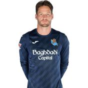
🧑';" /> A. Remiro Portero
2
🧑';" />
Aramburu
Defensa
3
🧑';" />
Aihen
Defensa
4
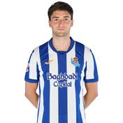
🧑';" /> Gorrotxa Centrocampista
5
🧑';" />
Zubeldia
Defensa
6
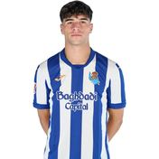
🧑';" /> Jon Martín Defensa
7
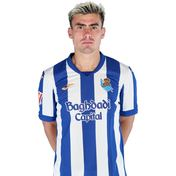
🧑';" /> Barrene Centrocampista
8
🧑';" />
Turrientes
Centrocampista
9
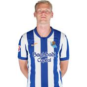
🧑';" /> Oskarsson Delantero
10
🧑';" />
Oyarzabal
Delantero
11
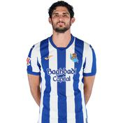
🧑';" /> Guedes Centrocampista
12
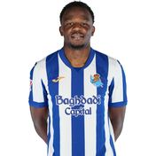
🧑';" /> Ochieng Centrocampista
13
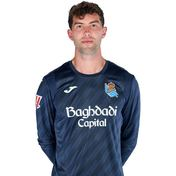
🧑';" /> Marrero Portero
14
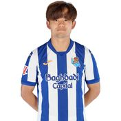
🧑';" /> Take Centrocampista
15
🧑';" />
Marin
Centrocampista
16
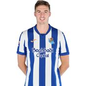
🧑';" /> J. Pacheco Defensa
17
🧑';" />
Sergio Gómez
Defensa
18
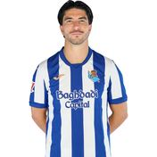
🧑';" /> C.soler Centrocampista
19
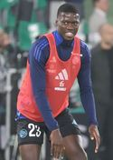
🧑';" /> M.sarr Defensa
20
🧑';" />
Odriozola
Defensa
21
🧑';" />
Herrera
Centrocampista
22
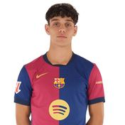
🧑';" /> H. Fort Defensa
23
🧑';" />
Zakharyan
Centrocampista
24
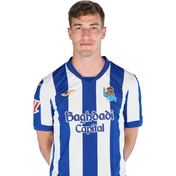
🧑';" /> Sucic Centrocampista
26
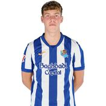
🧑';" /> Aguirre Centrocampista
27
🧑';" />
Carrera
Delantero
28
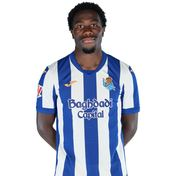
🧑';" /> Lebarbier Defensa
29
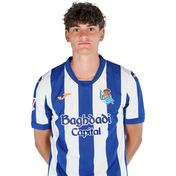
🧑';" /> Marchal Centrocampista
34
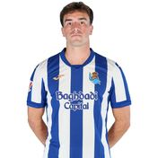
🧑';" /> Beitia Defensa